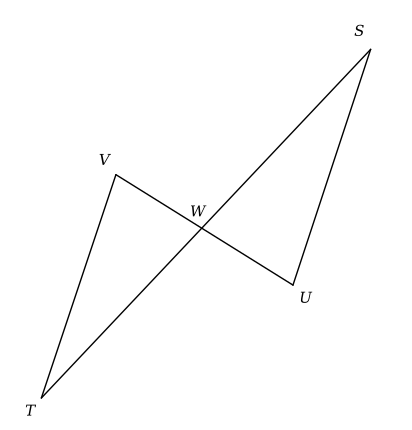

2025 DSE 數學 P1 Q8 答案＋詳解
題目（英文卷）
8. In the figure, $ST$ and $UV$ intersect at the point $W$. It is given that $SU \parallel VT$ and $W$ is the mid-point of $ST$.

(a) Prove that $\triangle SUW \equiv \triangle TVW$.
(b) Let $X$ be a point lying on $TW$ such that $\triangle SUW \sim \triangle VXW$. If $SU=57\ \text{cm}$, $SW=63\ \text{cm}$ and $WX=7\ \text{cm}$, find the perimeter of $\triangle TVX$. (5 marks)
官方評卷參考（Marking Scheme）
| Solution | Marks | Remarks | |
|---|---|---|---|
| ∠SWU = ∠TWV SW = TW ∠USW = ∠VTW ΔSUW ≅ ΔTVW | (vert. opp. ∠s)(given)(alt. ∠s, SU // VT)(ASA) | [對頂角][已知][(內)錯角,SU // VT] | |
| Marking Scheme: | |||
| Case 1 Any correct proof with correct reasons. | 2 | ||
| Case 2 Any correct proof without reasons. | 1 | ||
| (b) | Note that ΔSUW ~ ΔVXW .So, we have SU/VX = UW/XW = SW/VW .By (a), we have UW = VW .Therefore, we have 57/VX = VW/7 = 63/VW .Solving, we have VW = 21 cm and VX = 19 cm.The perimeter of ΔTVX=TV + VX + TX=57 + 19 + (63 - 7)=132 cm | 1M1M1A----(5) | |
考評報告
（a）Good. Many candidates were able to give a complete proof. Some candidates wrongly thought that W was the mid-point of UV. （b）Good. Many candidates were able to find the perimeter of ΔTVX. Some candidates wrongly gave the perimeter of ΔVWX as the answer
相關課題
技能分析（呢題考咩、陷阱喺邊）
- 主課題
- 圓形幾何